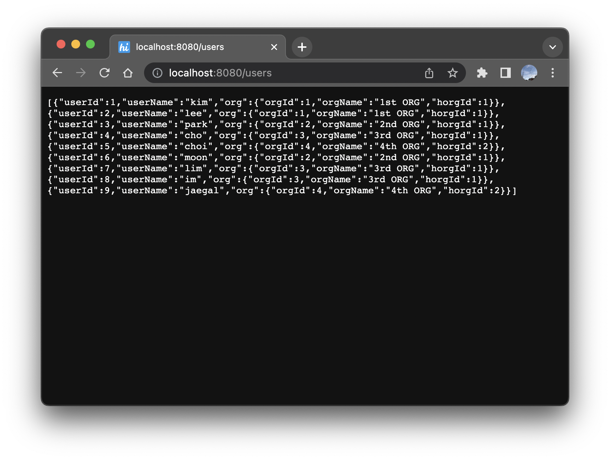

Springboot Mybatis 로 DB 연결하기 - 3
현재 내가 속해있는 프로젝트는 데이터베이스에 접근하기 위해 Mybatis를 사용하고있다. 같은 프로젝트 내 다른 마이크로서비스에서는 JPA를 사용하는 곳도 있는데, 내가 속한 서비스에서는 Mybatis를 사용한다.
이유인즉슨, ‘JPA의 러닝커브가 길다’인데 아무래도 Si 특성상 JPA가 익숙하지 않은 사람들이 더 많기 때문이다.
원래 내가 속한 마이크로서비스는 총 기간 1년으로 1년전에 이미 완료가 됐어야 하는 서비스인데, 점점 밀려서 오히려 Mybatis를 쓴게 독이되어버린 것 같은 상태가 되어버렸다.
여러 사람이 거쳐 가면서, 개발된 소스의 담당자가 변경되었고 새로 투입된 인력들은 기존에 어떤 쿼리나 메서드가 존재하는지 굳이 파악하지 않고 스스로의 방식대로 개발을 진행했기 때문이다.
특히나 쿼리를 사용해서 데이터를 CRUD 할때 사용하는 DTO의 수가 엄청나게 증가했다. 각각 자신이 맡은 부분은 있지만, 굳이 자신이 만들지 않은 소스를 삭제하거나 정리하거나 하는 사람은 거의 없다.
나는 이런 점이 너무 답답했고, 스프링을 공부하면서 이런문제를 어떻게 객체지향적인 방법으로 해결할 수 있을까 하는 고민을 해왔다.
토비의 스프링 마지막에는 이러한 문제를 낱낱이 제시하며, 오브젝트 지향 개발을 위해서 JPA와 같은 ORM을 사용하는 것이 좋다라고 얘기하고 있다.
프로젝트 표준이 정해져 있는 이상 현재 프로젝트에 (추가할 수는 있지만) 혼자 JPA를 적용하는 것은 문제가 있기 때문에 혹시나 Mybatis로는 비슷하게 문제를 해결할 수 없을까 하고 리서치 해본 결과, 완벽하게 같지는 않고 제약도 있지만 비슷하게 데이터를 조회가능하다는 사실을 찾았다.
select a.id as user_id,
a.name as user_name,
b.id as org_id,
b.org_name as org_name
from tb_user a
join tb_org b
on a.org_id = b.id
@Getter
public class UserOrgDto {
private String userId;
private String userName;
private String orgId;
private String orgName;
@Builder
public UserOrgDto(String userId, String userName, String orgId, String orgName) {
this.userId = userId;
this.userName = userName;
this.orgId = orgId;
this.orgName = orgName;
}
}
현재 우리 프로젝트에서 사용하고 있는 방식이다. 테이블 두개를 Join하여 원하는 컬럼들을 뽑아내고 Dto에는 뽑아낸 컬럼과 1:1 매핑되는 컬럼을 모두 필드로 만들어서 데이터를 조회하는 방식이다.
조회하는 데이터가 이 형식 단 하나라면 나쁘지 않은 방식이지만, 사용자와 조직, 주소정보 등 사용자와 관련된 다른 정보들을 또 다른 테이블에서 조회해야 한다면 Dto는 점점 길어지거나, 조회하는 데이터마다 추가적인 Dto가 필요할 것이다.
또한 이러한 방식이 지속되면 객체지향적인 개발과도 점점 거리가 멀어진다.
public class User {
private int userId;
private String userName;
private Org org;
}
public class Org {
private int orgId;
private String orgName;
private int horgId;
}
user.org.getOrgName()
user.org.getOrgId()
user.org.getHorgId()
하지만 위와같이 조직 정보를 객체로 조회할 수 있다면, Dto가 길어지지도 않거니와 각각의 정보가 객체 안에 존재하므로 알아보기도 쉬워진다.
Mybatis 는 공식 Document가 매우 잘 번역되어있기 때문에 참고하면 좋다.
https://mybatis.org/mybatis-3/ko/sqlmap-xml.html
2. Mybatis 설정파일 추가
Mybatis의 select tag에는 resultMap이라는 Attribute를 입력할 수있는데, 이를 이용해서 위의 방식처럼 데이터를 조회해 올 수 있다.
그 전에 먼저 mybatis 설정을 조금 바꿀건데, configuration.xml 이라고 파일을 만들어 다음과 같이 입력한다.
<?xml version="1.0" encoding="UTF-8"?>
<!DOCTYPE configuration PUBLIC "-//mybatis.org//DTD Config 3.0//EN" "http://mybatis.org/dtd/mybatis-3-config.dtd">
<configuration>
<settings>
<setting name="mapUnderscoreToCamelCase" value="true"/>
<setting name="lazyLoadingEnabled" value="true"/>
</settings>
<typeHandlers>
<typeHandler handler="org.apache.ibatis.type.ClobTypeHandler" jdbcType="CLOB" javaType="java.lang.String"/>
</typeHandlers>
</configuration>
- mapUnderscoreToCamelCase: 전통적인 데이터베이스 칼럼명 형태인 A_COLUMN을 CamelCase형태의 자바 프로퍼티명 형태인 aColumn으로 자동으로 매핑하도록 함
- lazyLoadingEnabled: 지연로딩을 사용할지에 대한 여부. 사용하지 않는다면 모두 즉시 로딩할 것이다. 이 값은
fetchType속성을 사용해서 대체할 수 있다.
위와 같이 설정 후 application.properties를 열어 해당 configuration파일 위치를 입력해준다.
mybatis.config-location=classpath:/sql/configuration.xml
3. ResultMap 작성
다음은 이제 조회할 데이터의 구조를 만들어 주면 된다.
조회를 위한 User 클래스와 Org클래스는 위에 이미 작성을 해두었기 때문에 생략하고,
sql-User.xml 매퍼 파일을 열어 가져올 데이터의 형태를 만들어 주고 해당 resultMap으로 데이터를 조회하는 쿼리를 작성해준다.
<?xml version="1.0" encoding="UTF-8"?>
<!DOCTYPE mapper PUBLIC "-//mybatis.org//DTD Mapper 3.0//EN" "http://mybatis.org/dtd/mybatis-3-mapper.dtd">
<mapper namespace="manson112.github.springmybatis.app.mapper.UserMapper">
<resultMap id="userResultMap" type="manson112.github.springmybatis.app.dto.User">
<id column="user_id" property="userId" javaType="int"/>
<result column="user_name" property="userName"/>
<association property="org" javaType="manson112.github.springmybatis.app.dto.Org">
<id column="org_id" property="orgId" javaType="int"/>
<result column="org_name" property="orgName"/>
<result column="horg_id" property="horgId" javaType="int"/>
</association>
</resultMap>
<select id="findAllUserInfo" resultMap="userResultMap">
select a.id as user_id,
a.name as user_name,
b.id as org_id,
b.org_name as org_name,
b.horg_id
from tb_user a
join tb_org b
on a.org_id = b.id
</select>
</mapper>
- column: 조회된 데이터의 컬럼 명. 여기서는 user_id, user_name과 같이 snake case로 조회를 하고있기 때문에 해당 컬럼들을 column Attribute에 적어준다.
- property: 입력된 column의 값을 매핑할 DataObject의 필드명을 적어주면 된다. 각 클래스의 필드명은 camelCase로 작성되었기 때문에 camelCase로 적어준다.
- : 이 resultMap의 핵심인데, 객체로 매핑될 필드들을 해당 태그안에 넣어주고, property로 객체 필드명, 그리고 javaType에 필드의 클래스를 입력 해주면 된다.
이렇게만 작성하고 서버를 동작시켜 해당 쿼리를 호출하는 url로 접속하면 다음과 같이 정상적으로 데이터가 조회됨을 알 수 있다.

만약 조직에 속한 모든 User를 뽑아내고 싶다면? 이때는 association 대신 collection 태그를 이용하면 된다.
다만 주의할 점은 User와 Org의 구조를 바꿔줘야 한다는 점인데, User가 Org를 가지고 있고 Org는 List를 가지고 있는 경우를 테스트 해봤지만, 제대로 동작하지 않았다.
public class User {
private int userId;
private String userName;
}
public class Org {
private int orgId;
private String orgName;
private int horgId;
private List<User> users;
}
<?xml version="1.0" encoding="UTF-8"?>
<!DOCTYPE mapper PUBLIC "-//mybatis.org//DTD Mapper 3.0//EN" "http://mybatis.org/dtd/mybatis-3-mapper.dtd">
<mapper namespace="manson112.github.springmybatis.app.mapper.OrgMapper">
<resultMap id="orgResultMap" type="manson112.github.springmybatis.app.dto.Org">
<id column="org_id" property="orgId" javaType="int"/>
<result column="org_name" property="orgName"/>
<result column="horg_id" property="horgId"/>
<collection property="users" ofType="manson112.github.springmybatis.app.dto.User">
<id column="user_id" property="userId" javaType="int"/>
<result column="user_name" property="userName"/>
</collection>
</resultMap>
<select id="selectOrgWithUsers" resultMap="orgResultMap">
select a.id as org_id,
a.org_name as org_name,
a.horg_id,
b.id as user_id,
b.name as user_name
from tb_org a
left join tb_user b
on a.org_id = b.org_id
</select>
</mapper>
위와 같이 클래스 구조를 바꿔주고 collection을 이용하여 resultMap을 만들어서 조회하면 원하는 결과를 얻을 수 있다.